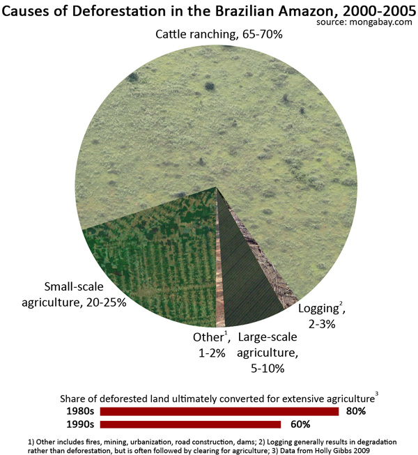

Brazil is world's third largest consumer of beef. It consumes 13% of all beef produced globally. It is also the highest beef consumer per capita, alongside the USA. Brazil is also the world's largest exporter of beef, along side India.
Beef in Brazil comes primarily from cows, many of which are Zebu cows imported from India. These cows require pastures for grazing, and cow feed for consumption. To meet these requirements, land needs to be cleared up for creating "pastures" and fields.
Brazil ran out of its share of pastoral land many years ago. The answer to the problem? Forests of Amazon.
The Burning Rain Forests of Amazon
The forests of Amazon are rain forests: meaning they create their own rain, to a great extent, in layman terms. These forests are a unique ecosystem, where the thick vegetation and trees are part responsible for the rainfall they receive, due to evapotranspiration. Simply put, no forest = no rain. The virtuous cycle of rain and flourishing forests will end if there were no forests left. The land will become parched and it will be impossible to create a forest out of that land again.
Deforestation in the Amazonia has been going on for several decades. Brazil has been seeing forest fires year in and year out, with the number and intensity of fires setting new records in 2019.
Deforestation is a problem that affects multiple generations, for the simple reason that once a part of the forest is burnt, it does not grow back. So the yearly forest fires are a compounded problem. Even if, perceptually speaking, the "rate" of the fire in a subsequent year is less, it only lessens the spread of the problem, does not eliminate it, and does not undo the problem already created in the previous years. Every year's deforestation is added on top of the deforestation that has already happened. It leaves a charred landscape behind, the perfect picture of devastation, in place of lush green vegetation and teeming wildlife.
The worst part is that most of these forest fires are man made: they are started by humans, for multiple reasons, mostly illegal.
Causes of Forest Fires: "The Hamburger Connection"
The beef industry is squarely to blame for the unabated forest fires in the Amazon forests of Brazil. Though the world woke up to this menace only recently, the speedily booming beef industry in Brazil has translated to thinner and thinner forest cover over the last few decades. Much of the food grown, as part of agribusiness, is also meant to feed cows, or exported to countries like China, to feed their livestock. So, indirectly, the agribusiness is also flourishing — and eating into the Amazon rain forests — due to the beef industry.
The beef industry in Brazil saw an upward rise in the late 1990's and early 2000's. This should have rung alarm bells, but instead was allowed to grow, as it contributed monetarily to the country's economy, with mounting beef exports, ignoring the destruction of the forests, which is the painful cost which came with the industrial scale of expansion of beef industry.
According to the Yale School of Forestry and Environmental Studies:
"Approximately 450,000 square kilometers of deforested Amazon in Brazil are now in cattle pasture." — Cattle Ranching in the Amazon Region

Image via MongabayIn the pasture land cleared up from deforestation, pastoral land is 10 times the amount of land used for growing grains.
"In Brazil, pasture land outweighs planted cropland by about 5 times." — Cattle Ranching in the Amazon Region
Hypothetically speaking, if the world were to turn vegan or vegetarian and stop eating beef altogether, the global demand for beef would cascade down. This would mean that the land currently available for agriculture would suffice to grow the food required by human beings, and there would be no further need to burn down the forest — neither for pastoral land, nor for agribusiness.
Fallout of Deforestation: Hello, Climate Change
Since the 1970's, Brazil has lost nearly 800,000 km² of forest cover. This is an area bigger than the state of Texas. The Amazon forests are home to 400 billion trees, and release one fifth of the globe's oxygen. Every time a chunk of the forest is burnt, the oxygen supply to the planet is cut off. The Amazon forests store approximately 90 billion metric tonnes of Carbon. Burning the forests releases toxic fumes, adding to the planet's GHG emissions by releasing this additional carbon currently stored in the forests.
With the forests gone, the goal of containing global warming to 2 degree Celsius looks ambitious and unrealistic. This is sending chills down the spines of climate scientists, who are quite sure that exceeding this goal will have catastrophic effects globally. Rise of temperatures and extremes of climates is only one of the effects.
The ice caps are melting, causing the sea levels to rise globally. This is loss of habitable land along the coast lines. Wildlife is getting destroyed as we speak. Animals are dying and homeless. The beef production process itself uses up natural resources like fresh water and fossil fuels, adding further to the global carbon footprint. Fumes from the forest fires are choking citizens in Brazilian cities, possibly causing respiration disorders and diseases, which will be uncovered a few years later.
So much destruction, death, and disease, unleashed on the planet simply because humans cannot drop their irrational infatuation with beef.
Cover Image via NASA
References:
World Beef Consumption: Ranking Of Countries
The World's Largest Exporters Of Beef
The Amazon is burning at record rates — and deforestation is to blame
Deforestation in the Amazon may soon begin to feed on itself
Satellite images from Planet reveal devastating Amazon fires in near real-time
Near the Amazon fires, residents are sick, worried, and angry